The R Package clustGLMM - Clustering Longitudinal Data of Mixed Type
Jan Vávra, Bettina Grün, Gertraud Malsiner-Walli, Arnošt Komárek
2026-11-27
clustGLMM.RmdAbstract
Package clustGLMM provides tools for Bayesian estimation of finite mixtures of multivariate generalized linear mixed models to cluster longitudinal data. A multivariate regression setup with several dependent variables of mixed type (continuous, count, binary, ordinal and nominal) is covered where random effects have a joint distribution across all dependent variables. For each cluster, different regression coefficients and random effect distributions may be assumed to characterize and differentiate them. The package provides functionality to suitably specify the model using a formula interface, perform fully Bayesian estimation based on Markov chain Monte Carlo sampling with data augmentation and assess the fitted model using post-processing tools to investigate convergence, identify cluster distributions and classify (new) observations.
Introduction
Clustering longitudinal multivariate data is a key task in many fields, including medicine, psychology, and the social sciences, when repeated measurements of heterogeneous types are collected for individuals. These data usually consist of a combination of continuous, count, binary, ordinal, and nominal outcome variables which are predicted through explanatory variables. Modeling such data structures in a clustering context using a multivariate regression setup requires the flexibility to jointly account for individual random effects and group-specific heterogeneity.
This indicates the need for a unified, flexible, and extensible implementation for clustering mixed-type longitudinal data within a fully probabilistic framework based on a mixture model of multivariate generalized linear mixed models. Several R packages address only parts of this problem as they only allow to fit simplified versions of this model. Package lcmm (Proust-Lima et al. 2017) provides tools to estimate latent class mixed models for continuous and categorical outcomes, but does not cover the full range of outcome types from the generalized linear modeling framework. Package flexmix (Leisch 2004) supports finite mixture modeling with customizable components, with the currently available model drivers not covering the non-Gaussian case of a mixed model and a multivariate approach requiring the conditional independence assumption. Packages such as MCMCglmm (Hadfield 2010) and mixAK (Komárek and Komárková 2014) offer Bayesian inference via Markov chain Monte Carlo (MCMC) sampling for generalized linear mixed models and mixture models, but require specialized formulations and offer limited clustering functionalities for mixed outcomes.
To address these limitations, we introduce the R package clustGLMM, which implements a Bayesian model-based clustering framework for longitudinal data with mixed outcome types as described by Vávra et al. (2024). The package models the data using a mixture of generalized linear mixed models (GLMMs), allowing for a flexible specification of outcome distributions and random effects. Inference is performed via MCMC sampling and the outputs are compatible with package coda (Plummer et al. 2006), enabling a full posterior characterization of both, model parameters and latent cluster assignments.
By focusing specifically on clustering, clustGLMM fills a gap between general-purpose Bayesian modeling tools and more specialized latent class or mixture modeling packages, offering a practical and extensible solution for researchers working with complex longitudinal data. In particular, a number of post-processing procedures are provided to inspect and assess the posterior MCMC draws, but also to identify cluster distributions and classify observations to allow for a convenient use in clustering applications. All computations and graphics in this paper have been done with clustGLMM version 1.1.0 and R version 4.6.2 using R Markdown. The newest release version of clustGLMM is always available from the Comprehensive R Archive Network (CRAN) at https://CRAN.R-project.org/package=clustGLMM, an up-to-date version of this paper is contained as a package vignette.
Methodology
In this section, we briefly outline the model for clustering multivariate longitudinal data of mixed-type implemented in package clustGLMM. In addition to the model specification, we also discuss the prior structure and the hyperparameters required for the Bayesian approach. More details can be found in Vávra et al. (2024).
Modeling longitudinal mixed-type outcomes
We start with explaining the necessary notation. We consider a multivariate regression setting where the indices for the outcomes are contained in the set . The index denotes one specific outcome variable and is the union of five disjoint sets of indices: , , , , . Each set contains the indices for one of the five different outcome types considered: numeric, count, binary, ordinal and nominal.
We assume that the data provided is collected for individuals with observations possibly made for each individual at different observation points resulting in a potentially different number of observations for each individual. We denote outcome of individual from the -th time point, , by , which together form a data set of rows. These observations are accompanied by explanatory variables which are split into two regression vectors and to distinguish the model matrix for the fixed and random effects in the mixed-effects model, respectively. Note that each outcome is allowed to have a different set of regressors. Thus, the linear predictor with fixed effects and individual-specific random effects represents the main part for modeling outcome .
For each outcome we consider one of five different types of GLMMs, i.e., different specifications of the response distribution and the link function which relates the mean to the linear predictor. In particular, we distinguish the following regression models:
- We consider normal linear mixed-effects models for a quantitative (numeric) outcome . This requires an additional dispersion parameter which captures the variability of the regression errors. As usual in Bayesian statistics, we parameterize the normal distribution via the precision parameter .
- For count outcomes, , we consider the Poisson distribution with the log link. This specification does not require any additional model parameter.
- Binary outcomes, , are modeled by a logistic regression with the logit link function .
If the number of categories, , is higher than 2, we consider the following two specifications:
- If an ordering of the categories (labeled ) is possible, we apply the proportional odds assumption, i.e., the log-odds differ only in intercepts . In this case the intercept is excluded and this effect is modeled through a separate parameter because the following ordering constraint needs to be satisfied: , which requires a special prior and sampling approach.
- If categories (labeled again as ) cannot be ordered or the proportional odds assumption does not apply, then we create a linear predictor specific for each category, , with category-specific fixed effects . The random effects might also either be category-specific or alternatively common to all categories except the first. For identifiability, we fix the first category to zero: and leading to .
The probability distributions of the observed outcomes given the linear predictors and auxiliary model parameters can be summarized in the following way:
Assuming independence among the set of outcomes for the same individual is often unrealistic. Hence, we opt for a joint modeling approach which captures the dependency between the observations of the same individual. In particular, we stack the random effects for each individual into one vector with length denoted by and assume that they follow independently across individuals a multivariate normal distribution, where is a positive definite matrix. This implies that the outcomes for the same individual are marginally dependent. However, they are still independent conditional on the random effects.
Model-based clustering of GLMMs
The model described in the previous section assumes that all individuals within the random sample follow the same, homogeneous model conditional on the explanatory variables. In case unobserved heterogeneity is present in the sample, this approach will fail. We thus extend our model and consider a model-based clustering approach where we assume the presence of latent groups. Each group follows the model outlined in the previous section but possibly differs in the values of the parameters. E.g., the groups may differ in the fixed-effects regression parameters, in the error precision of the numeric outcome and / or in the dependence structure of the random effects. Our implementation allows to flexibly choose which model parameters are group-specific and which ones are fixed to be the same across all latent groups.
The specification which parameters are group-specific and which are the same across all latent groups will usually depend on what is assumed to characterize the latent groups. In addition imposing the restriction that some of the effects are the same across groups simplifies the model and facilitates estimation and interpretation. In the following, we will denote group-specific parameters with a superscript , e.g., . Parameters without this superscript are parameters which are the same across groups or represent the set of the corresponding parameters across all groups depending on context. Turning group-specificity on or off will be made en bloc for auxiliary model parameters like , or . For the fixed effects, a more selective approach is usually pursued with some effects being assumed to be the same across all groups, while others differ across groups. I.e., we split the fixed-effects contribution to the linear predictor into two parts such that the linear predictor for group takes the form of where are the fixed effects shared among all groups and are the fixed effects specific to group . Naturally, the sets of regressors and need to be mutually exclusive to avoid identifiability issues.
Each individual belongs to one of the groups. Group membership is assumed to be unobserved and given by the latent group allocation indicator . The group size corresponds to the marginal group allocation probabilities that sum up to one over . Marginalizing over the latent group allocation indicators, we obtain a mixture distribution where the components consist of multivariate generalized linear mixed models and the probability density function (pdf) is given by: where denotes the conditional pdf, gathers all outcome values observed for individual and gathers the covariates for individual . Due to the general model specification with different distributions for the dependent variables, the integral over the random effects cannot be analytically evaluated. In Bayesian estimation using MCMC sampling, we avoid these integrals by not marginalizing over the random effects, but performing Bayesian data augmentation and working with the conditional distributions.
Back transformation after standardization
In Bayesian mixture modeling, the priors on the group-specific parameters in the components need to be proper to obtain a proper posterior, and in general, hyperparameters inducing a certain regularization are preferable. We standardize numeric outcome variables and non-intercept regressors by default to ensure that the priors with the default hyperparameters impose a comparable shrinkage on the regression coefficients, error precision and random effect covariance regardless of the specific scaling of the variables. This standardization does not only change the fixed and random effects (especially intercepts), but also the precision , the ordered intercepts as well as the covariance matrix . In order to be able to interpret the parameter estimates with respect to the original scaling, the back-transformed parameters are reported in the output.
Below, we detail how we transform the parameter estimates back to be able to interpret them with respect to the original scaling of the variables.
First, consider the current parameterization of a numeric outcome : where we explicitly separated the group-specific intercept parameter as well as the random intercepts , and added the noise .
We switch to the equivalent version of this model with standardized regressors (and numeric outcome) using where and denote the corresponding means and the standard deviations.
This transformation does not only affects the regression effects but also the precision as well as the covariance matrix of the random effects.
A similar decomposition of the linear predictor is performed for the other types of outcomes as well. However, naturally in this case and .
In the following we outline the necessary transformations to obtain the original interpretation of model parameters (without ) from the model fitted with standardized regressors (with ). In particular, the following transformations (performed in this order) provide the original model parameters:
In the derivations above, we considered only exactly one outcome for each available type to simplify notation when indicating how the matrix needs to be transformed using a block diagonal matrix .
All formulae above are under the full generality of group-specificity of all model parameters. The intercept and ordered intercepts have to be group-specific in order to make the transformation possible if there is at least one group-specific regression effect. If there is no group-specific regression effect, then the intercept is allowed to also be common to all groups. Regression effects for the categorical outcome are transformed in the same manner, but require an additional index for each non-baseline category level.
Priors
Within the Bayesian context, we need to specify prior distributions for all model parameters. We choose conditionally conjugate priors whenever possible to obtain well known full-conditional distributions. We distinguish between selecting priors for the component-specific parameters and the component sizes.
All the fixed effects are given an independent centered normal prior, where the scale is adjusted depending on the outcome type. For numeric outcomes, the precision parameter is included within the normal prior for fixed effects and . The precision is given a gamma prior to complete the normal-gamma prior family for linear regression models. For the ordered intercepts of ordinal outcomes, we use an implicit prior by imposing a symmetric Dirichlet prior on the induced category probabilities given the ordered intercepts and a zero effect of the linear predictor:
Pursuing a conditional conjugate specification, we use the Inverse Wishart distribution as prior for the positive definite covariance matrix (or group-specific ). This is equivalent to assuming that follows a Wishart distribution with some scale matrix . Since, this prior specification is very sensitive to the choice of , we decided to use a hierarchical prior structure. I.e., also is a random parameter with an analogous inverse Wishart prior structure.
We select the prior on the component sizes assuming that the number of clusters is not known and that a sparse finite mixture approach (Malsiner-Walli et al. 2016) is pursued to determine a suitable number of clusters. In particular, we specify an overfitting mixture, where the number of components is clearly larger than the foreseen number of clusters in the data, and assign a symmetric Dirichlet distribution to the component sizes with a small value for the parameter . The lower the value of , the higher the probability that only a few components get substantial weight while the remaining components have negligible size. We use this prior setting to determine the suitable number of clusters by focusing on the number of non-empty components. To reduce the impact of a specific choice of , we use a hierarchical prior specification imposing a gamma prior on , still in line with our sparse approach, i.e., putting a lot of mass at small values of .
We summarize our choices for the prior distributions in Table @ref(tab:prior-table). This table also includes the default choices for the hyperparameters and indicates the names used in the clustGLMM package.
| Notation | Distribution | Hyperparameter | clustGLMM name | Note | |
|---|---|---|---|---|---|
| Fixed effects () | , | , | or with , for conjugacy | ||
| Error precision | , | , | or for | ||
| Fixed effects (other) | , | , | specific to type not each outcome | ||
| Ordered intercepts | transformed | for | |||
| Random effects | or with | ||||
| Precision matrix | or for | ||||
| Inverse scale matrix | , | , | or for | ||
| Component sizes | symmetric, randomized | ||||
| Sparsity | , | sparse finite mixture with low |
Inference
In the following, we summarize our approach to approximate the posterior distribution of the model parameters. This posterior is too complex to be evaluated directly and thus we approximate it using MCMC sampling. The presence of latent variables such as the component allocation indicators , random effects or possibly even missing outcome observations can easily be accounted for during MCMC sampling of the posterior. Based on the data augmentation principle, we combine all primary model parameters, random prior hyperparameters and latent variables into one large set of parameters and latent variables : The posterior distribution of given by a usual Bayes formula is the target distribution, where and gather outcomes and covariates for all individuals. Pursuing an MCMC approach, we create a Markov chain consisting of samples of that could eventually be considered as a dependent random sample from the target distribution. We use these samples for posterior inference about model parameters and transformations thereof.
MCMC sampling
To create such a Markov chain, we pursue a Gibbs sampling approach where possible. We divide into suitable smaller blocks and iteratively sample every block from its full-conditional distribution: where the full-conditional distribution is viewed as a function of and other parameter values are kept fixed. We carefully set up the prior distributions for the model parameters to ensure conditional conjugacy where possible. Therefore, many parameters can be directly sampled from well known distribution families and the only challenge is the efficient computation of the parameters of the full-conditional distributions.
However, not every full-conditional distribution falls into a known family of distributions. In this case, we use a Metropolis-Hastings (M-H) approach. In each M-H step, a move from the current value to a new value of the parameter is proposed and the new value is accepted with prescribed probability or alternatively the current value is retained. The challenge when implementing an M-H step is to find a suitable proposal distribution that sufficiently well resembles the full-conditional distribution in order to be able to obtain a suitable acceptance rate. Here, we only briefly outline the M-H approach pursued; more details on the implementation can be found in the supplementary material to Vávra et al. (2024).
The first step consists of transforming the block of interest so that it has unbounded support, , e.g., we log-transform or transform the ordered intercepts to probabilities using the softmax function. Then, the log-pdf of the full-conditional distribution for the transformed parameter is approximated by the Taylor expansion of the second order: This Taylor expansion reduces to a quadratic form with negative Hessian matrix in the middle if evaluated at the maximum point found by the Newton-Raphson (N-R) method, i.e., where . Locally, the log-pdf resembles the log-pdf of a centered multivariate normal distribution. Since the M-H step works best if the proposal distribution is close to the target distribution, we use the negative Hessian matrix (obtained as a by-product of the N-R method) as the precision matrix for the proposal distribution of direction in which to move from the current value of the transformed block . This distribution can be adjusted by a multiplicative constant to increase or decrease the potential step size. Hence, Moreover, we allow for robust proposals by multivariate Student-t distribution with the same scale matrix but heavier tails if degrees of freedom are set low. The new value is accepted with probability otherwise the old value is retained. Finally, the new value of is transformed back to .
Clustering probabilities and deviance
Using an MCMC sampling approach with data augmentation, we can avoid approximating the integral @ref(eq:pdf-int-bi-Ui) to estimate the model parameters. However, to determine some quantities of interest such as the clustering probabilities or evaluating the deviance, this integration over the random effects needs to be performed. In particular, the clustering probabilities of an individual to belong to component can be viewed as parametric functions of the primary model parameters and the data of the individual and are proportional to We reformulate the integrand as a function in variable , i.e., as , to apply an approximation method. The Laplace approximation relies on the Taylor expansion of the second order of the function , assuming that it is differentiable and concave. Using the N-R method the maximum and the negative Hessian matrix at the maximum are found. These are then used in the Laplace approximation: We use these approximations to obtain estimates for the clustering probabilities defined above. The normalizing denominator for the proportionality is an approximation to given in @ref(eq:pdf-int-bi-Ui), which can be used to determine the contribution of a single individual to the deviance defined as .
In general, however, the Laplace approximation of the integral is rather crude. To reduce the approximation error, we also implemented Adaptive Gaussian Quadrature, a natural generalization of the Laplace approximation (Pinheiro and Chao 2006). The idea is to evaluate the function on a suitable grid of values determined by the maximal point and -scaled roots of the Hermite polynomial of prescribed order. The first order polynomial has only one root (0), thus yielding the Laplace approximation. The number of points where function needs to be evaluated increases exponentially with the order of the polynomial. Further details can be found in the supplementary material to Vávra et al. (2024).
These approximations have to be done for all considered cluster labels and for every sampled set of model parameters within the MCMC chain to explore the posterior distribution of properly. Moreover, the full deviance requires the separate evaluation for each individual within the dataset. This is usually computationally very expensive and, hence, one might either need to rely on crude approximations or make use of parallel computing for better approximations.
Implementation
In the following, we discuss the implementation of the methodology in package clustGLMM in more detail. An overview of the typical workflow and the key functions is given in Figure @ref(fig:workflow-diagram). In the following subsections we go through each of the steps and discuss it in detail.
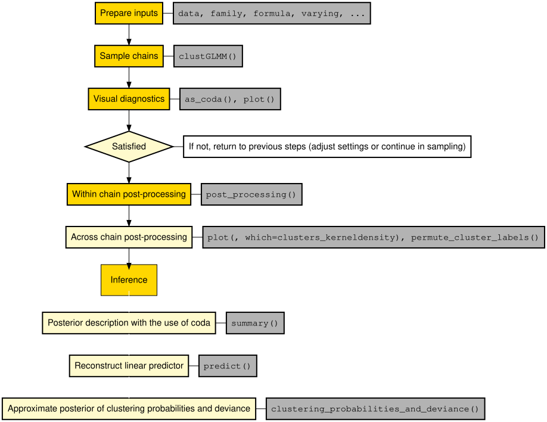
Typical workflow with clustGLMM and key functions.
Prepare inputs
First, we discuss the arguments which need to be specified for the
main fitting function clustGLMM() and describe the expected
format of the required inputs. The overview of the arguments of function
clustGLMM() reads:
## clustGLMM(formula, id, family, data, G, varying, save, param, tuning, inits,
## iter = 1000, nchains = 1, standardize = TRUE,
## howsave = c("data.frame", "list", "cmcmc"))The outcomes with their types, i.e., their distributions, are
specified in the family argument. This argument is provided
as a named vector indicating the outcome types named by the outcome
names matching the column name in data. The following types
are available:
-
"num","gaussian"for numeric outcomes, , -
"poi","poisson"for count outcomes, , -
"bin","bernoulli"for binary outcomes, , -
"ord","cumulative"for ordinal outcomes, , -
"cat","categorical"for categorical outcomes, , where the first category is considered the baseline.
Internally, outcomes are ordered to ensure that the types are in the
same order as listed above.
The family returned by clustGLMM() then
follows this ordering.
Our implementation allows a different model formula for each outcome.
All formulas are passed in the argument formula as a named
list with names indicating the outcomes. For each outcome, three
formulas (of class "formula") are required:
-
fixedfor fixed effects common to all clusters, -
groupfor cluster-specific fixed effects, -
randomforid-specific random effects.
In addition there is also the option to include an element named
offset which contains the column name of the offset
variable, i.e., the values that shift the linear predictor without any
unknown coefficient. By default, no offset is considered.
Sharing the same terms in both, the fixed and
group, formulas is allowed. By default, this is resolved by
removing duplicated terms from fixed and having them only
included in the model matrix corresponding to the group
formula. For example, if both formulas imply that an intercept is
included in the model matrix, a cluster-specific intercept is estimated.
Note that the intercept term is removed from the formula for ordinal
outcomes, since this is captured by the model parameter
c_ord (or its transformations a_ord or
pi_ord). The "clustglmm" object returned by
clustGLMM() contains lists (lfixnames,
lgrpnames, lrannames) of covariate names which
can be matched to the corresponding regression coefficients
beta...[] or random effects b[,].
Data are passed in the data argument as a
data.frame which contains all outcomes, regressors and a
column with name specified in the argument id that
indicates which rows correspond to the same subject. The values in
id are internally mapped to 1:n where
n is the number of unique values in id. This
mapping is returned in the "clustglmm" object as element
numbered_unique_ids. The maximum number of components to
include in the mixture model is specified as an integer value with the
argument G (allowing also the value 1 to induce no
clustering).
The next four arguments provide more details regarding the model specification, the model estimation via MCMC sampling as well as how sampling results are returned. These arguments are expected to have the following structure:
-
varying- a named vector of Booleans controlling cluster-specificity of other model parameters, -
save- a named vector of Booleans controlling which sampled model parameters should be returned, -
param- a named list of prior hyperparameters, -
tuning- a named list with named lists for integer and double values that adjust the sampler, especially the M-H proposal steps constructed by the use of the N-R method.
For a full description of each argument see the documentation. If an
argument is missing, then the default choices constructed by
default_varying(), default_save(),
default_param(), and default_tuning() are
used. We recommend to call these functions, change the default object
returned as required and use the updated object in the call to
clustGLMM().
The argument inits expects a list of initial values used
to start each of the chains. The structure is the same as the output
last of clustGLMM(). The output
last can be used to easily continue sampling. It suffices
to call clustGLMM() with the same settings and specify
inits = ...$last. Note that if standardization is in
effect, these initial values relate to the transformed scale and not the
original one, which is used for the returned samples. If the argument
inits is missing, then initial values are determined in an
automatic way based on a random partition of the observations for each
chain.
It remains to choose the number of chains using nchains
(chains will be labeled by 1:nchains, with G
allowed to vary across chains through specification via an integer
vector), the length of the chains to be sampled with iter
and the standardization indicator standardize. The last
argument specifies the format in which the samples should be returned
via howsave. We recommend to use the option
"data.fame" which implies that for each chain, all model
parameters are returned in one huge data frame with carefully named
columns based on the following pseudocode:
paste0(parameter, # parameter ~ character(1)
if (is.outcome.specific) {"_", outcome}, # outcome ~ character(1)
if (is.group.specific) {"(", g, ")")}, # g ~ integer(1)
if (is.not.0D) {"[", d[1], if(is.2D) {",", d[2]}, "]"} # d ~ integer(2)
) # e.g., "beta_num_income(1)[1]"This means that the naming convention indicates that first the
parameter name and outcome type are given (e.g., "beta" and
"num") separated by "_" and followed by the
outcome name (e.g., "income") also separated by
"_". Then the component number in round brackets is
included (e.g., "(1)") and the dimension by square brackets
(e.g., "[1]").
Alternatively, we also provide a second option corresponding to
"list". Using this option, all sampled values are saved in
a carefully structured list with the following layers: chain, parameter
name, outcome name (for outcome-specific parameters), cluster (for
cluster-specific parameters). The leaves of this structure are arrays
(2D or 3D) depending on the subset of parameters.
Sample chains
After careful preparation of all inputs, clustGLMM() can
safely be called to samples the MCMC chains. In this section we describe
each of the steps this function performs.
First, missing arguments are replaced with their default values. A
warning is issued in case argument save specified that
crucial parameters are not to be returned. Subject indices
id are relabeled and outcomes are suitably ordered. Then,
each outcome is checked for compatibility with its given type:
-
num- values have to be numeric, infinite values are not allowed, otherwise an error occurs. Ifstandardize = TRUE,scale()is applied withcenterandscaledetermined bymeanandsdwhile ignoring missing values. -
poi- values are checked to be finite non-negative integers, otherwise an error occurs. -
bin-factor()is applied and an error occurs if the number of unique values is not 2. Internally, the first level is considered to be 0, the other 1. -
ord- if not yet of class"ordered",factor(., ordered = TRUE)is called. Internally, the ordered categories are replaced with 0, 1, …,Kord. -
cat- if not yet of class"factor",factor()is called. Internally, the ordered categories are replaced with 0 (baseline), 1, …,Kcat.
Ordinal and categorical outcomes are not allowed to have less than 3
levels (as for 2 levels one may use the binary type), but there is no
upper limit for the number of categories. As the number of parameters
grows with the levels, the user needs to take care not to specify a
variable with many unique values to be a categorical outcome. Note that
Kord and Kcat correspond to the actual number
of categories minus 1 (as the numbering starts at 0).
Next, the formula is processed and model matrices are
created. All model matrices are combined into one large model matrix
with uniquely named columns. This is computationally more efficient
because we expect many columns to be simultaneously used for several
outcomes. For each outcome, a list of the column names that result from
the fixed, group and random
formulas is created to select the suitable columns from the full model
matrix (lfixnames, lgrpnames,
lrannames). These lists also determine the order in which
the effects are named and saved. For example, "[1]" in
"beta_num_income(1)[1]" indicates that this
cluster-specific regression coefficient is tied to the first element of
the corresponding lgrpnames[["income"]] value. During these
preparations, we ensure that not the columns are included in
fixed and group and eliminate the column names
common to fixed and group from
fixed and keep them only in group.
If standardize = TRUE, the ability to transform
parameters back to the original scale is checked. An error is triggered
if the intercept term (column "(Intercept)") does not
appear among the fixed and group effects. In
case of group-specific effects, the group formula is
ensured to include an intercept. An ordinal outcome has no explicit
intercept within the formula, but the parameter of the ordered
intercepts needs to be group-specific
(varying["c_ord"] = TRUE) if there are some group-specific
effects. In case of standardization, random effects have to include an
intercept and, otherwise, an error is triggered. The scaling of columns
other than "id" or "(Intercept)" is performed
with scale(, center = TRUE, scale = TRUE). The centers and
scales used are saved in named vectors centers and
scales. Finally, note that NA values for
regressors are not allowed.
Next, initial values are determined if the argument
inits is missing. First, a random partition of observations
into the given number of components G is created. Then, for
each outcome, the corresponding model (lm,
glm(family = poisson), glm(family = binomial),
MASS::polr, nnet::multinom) is fitted with
common effects for the fixed and group-specific effects and all
available data. The estimates corresponding to fixed effects are used as
their initial values. Then, the same model is fitted on each subset of
data from the random partition to obtain the initial values for the
group-specific regression coefficients. If an error occurs, e.g., due to
small group size in the partition, then the estimates from the fit with
the complete data are used instead. The random effects are sampled
randomly from a centered normal distribution with standard deviation
given by param$init_b_sd. The precision matrix for the
random effects is initialized randomly as a diagonal matrix with
diagonal elements sampled from a gamma distribution with shape
1/param$init_b_sd^2 and unit rate.
The model contains a lot of parameters of very different nature
(outcome-specific, group-specific, varying dimension). In order to cope
with these differences, a matrix settings is created for
each chain where each row contains all necessary information to properly
handle one of the model parameters. Since the number of components could
be different for different chains, a list of such matrices for each
chain is returned. The most important columns of this matrix provide
information on the dimension size (with or without group-specificity).
This information is crucial to store the sampled values of the
parameters. For outcome-specific parameters (e.g., regression
coefficients), the lists yspecd1 and yspecd2
contain the total dimension sizes per each outcome.
The MCMC sampling is by far the most time-consuming part of this
function. The pure R implementation was painfully slow and, therefore, C
routines were implemented to do the heavy lifting. This requires
additional preparation steps, since only vectors of integers or doubles
can be passed down via .C(). During this preparation, for
example, IDs and cluster allocation indicators are shifted to start from
0 and not 1, the labels for the categorical outcomes of the first and
last category are switched (as the C functions assume the last category
to be the baseline), NA values are replaced with zeros.
Moreover, the initial values are concatenated in the order expected by
the C function. These values are duplicated into a vector of the same
length representing the current parameter values. Both vectors are
accompanied by a structure of pointers pointing to the starts of each of
the parameters. When a new value of the parameter is sampled (and
accepted), the corresponding cells are overwritten. Simultaneously,
these new values are saved into storage vectors which were prepared
separately for each model parameter including also the transformed ones
(standard deviations, correlations, …). The C code regularly prints the
percentage of sampled iterations so that the user may estimate the
remaining time to finish the sampling step. After the sampling, the
vector containing the last values is transformed back into the R format.
In this way, the last sampled values $last can be used
again as initial values. Depending on the save format indicated in
howsave, the stored values are processed into the final
$draws output with the help of from_C_to_...
functions. If standardization was applied, then the $draws
(but not $last) are transformed back to enable the
interpretation on the original scale. The details about this
back-transformation are given in the Back
transformation after standardization section.
This sampling is performed sequentially for all chains. In case this
is very time-consuming, parallelization across chains might be
attempted. This can be achieved by writing a function that calls
clustGLMM() with the same settings for
nchains = 1 in parallel and then combines the results into
one object. In addition, high memory demands might be caused, not only
by the vast number of parameters of large dimension sizes but also due
to auxiliary variables. For example, the C functions use a 4-component
predictor dedicated to the fixed, group, random and offset part, and the
final predictor is the sum of these four components. When some of the
effects are updated, only the corresponding part of the predictor gets
updated and the rest remains untouched. This approach is even more
expensive for categorical outcomes where a separate predictor is kept
for every non-baseline category. To reduce the memory demands, all
operations with symmetric matrices are handled using only the upper
triangle.
Another potential source for long sampling times could be due to
difficulty when determining a suitable proposal distribution via the N-R
method initiated with the last known value. In case the N-R method does
not converge or does not meet the required tolerance
tuning$double$tolerance after the maximal number of steps
tuning$integer$maxiter, the N-R procedure is started again
from a different point (corresponding to the current best approximation
scaled by a value uniformly sampled from
).
This is repeated until the required tolerance is met or the maximal
number of N-R reiterations tuning$integer$maxnrep is
reached. If the N-R method is not successfully terminated, the current
best solution is used for the proposal distribution. Since this search
for an optimal proposal distribution can be very time-consuming, the
proposal distributions are updated only every
tuning$integer$freq_proposal_update-th iteration. Since the
acceptance rate could be very low, there is also an option to repeat the
proposal step for the same parameters several times with
tuning$integer$times_proposal > 1. Faster computation
times could be achieved by adjusting these tuning parameters. However, a
faster evaluation could also come at the cost of lower acceptance rates.
We recommend to update the proposal distribution frequently when the
stationary distribution has not been reached yet. The proposal
distribution is scaled by tuning$double$const_proposal_...
(where ... stands for any parameter updated via the M-H
proposal) to achieve the desired acceptance rate. Similar to the prior
hyperparameters, their value is fixed for every underlying parameter,
e.g., one cannot set different values for two outcomes of the same type.
Similarly, there exist degrees of freedom
tuning$double$df_proposal_... for multivariate
Student-
proposal distribution set to Inf by default (multivariate
normal).
Latent variables and model parameters are sampled in the following order (using either a Gibbs or M-H sampling step):
-
naY- missing outcome values are generated from the underlying model given the current allocation of the corresponding individual. These replace theNAvalues in the vector used for storing the outcome values. It is also possible to sample the potential outcome values if the individual had been in other clusters by settingvarying["naY"]toTRUE. -
beta_num,beta_num_fix- regression coefficients for numeric outcomes (Gibbs). -
prec_num- precision error term for numeric outcomes and its transformation to standard deviationsd_numand variancevar_num(Gibbs). -
beta_poi,beta_poi_fix- regression coefficients for count outcomes (M-H). -
beta_bin,beta_bin_fix- regression coefficients for binary outcomes (M-H). -
beta_ord,beta_ord_fix- regression coefficients for ordinal outcomes (M-H). -
a_ord- ordered intercepts transformed into the unrestricted space (M-H), then transformed back to the original and prior interpretationc_ord,pi_ord. -
beta_cat,beta_cat_fix- regression coefficients for categorical outcomes (M-H). -
InvSigma- precision matrix for random effects (Gibbs) and its transformations: covariance matrixSigma, standard deviations from diagonalsdSigma, correlation matrixcorSigmaand determinantdetInvSigma. -
InvQ- inverse of the Wishart scaling matrix for the prior forInvSigma(Gibbs) and its transformationsQand determinantdetInvQ. -
b- random effects (M-H). -
w- component weights (Gibbs). -
pUig- full-conditional clustering probabilities and then the new allocation indicatorsU. As by-product we obtain the cluster occupancy numbersngand the number of non-empty clustersGplus. In this step, alsologlikis determined, which corresponds to the “in-sample log-likelihood”. In particular, to obtain the log-likelihood value, integration over latent variables (i.e., the allocation indicators and random effects) is not performed and the last sampled values are inserted. -
e0- Dirichlet parameter sampled on the log-scale and then transformed back (M-H).
Note that the steps for InvSigma, InvQ and
random effects are dropped if there are no random effects. In such a
case the outcomes as well as the observations (rows) for the same ID are
assumed to be independent. This allows to also fit regular cluster-wise
regressions without including random effects.
Before all the outputs of clustGLMM() are returned in a
list, a crude clustering is performed for each chain separately which
does not account for potential label switching. First, the sampled
allocation indicators U (with values in 1, …, G) are
summarized for each individual. The matrix clustering then
contains the most frequent cluster label for each individual in the rows
and each chain in the columns. The matrix certainty then
contains the proportion of these most frequent labels for each
individual and chain. Then, the most frequent number of non-empty
components modeGplus is determined for each chain. A list
clusters then contains for each chain the
modeGplus labels included in clustering. These
labels will be used for plotting. The other components are considered
empty and ignored for plotting, unless specified otherwise.
Finally, call summarizes the sample sizes as well as the
formulas specified for all outcomes: first, the fixed effects, then the
random effects (in the order assumed by InvSigma) and
finally the group-specific effects. Printing objects of class
"clustglmm" prints the content of call
followed by the summary of the crude clustering for each chain
separately.
Visual diagnostics
Given that some users may already be familiar with already
established diagnostic tools for assessing convergence of a MCMC chain,
we provide function as_coda() to convert an object of class
"clustglmm" to a "mcmc.list" object as defined
in package coda (Plummer et al.
2006). This enables easy use of all diagnostic tools available in
that package.
The use of these tools, however, might be complicated by the large dimension of the parameter space of our model, which can easily contain hundreds of parameters and even thousands of values in case latent id-specific variables are also considered. We thus provide a set of plotting functions which provide diagnostic plots for selected specific individual parameters related to a given parameter name:
-
plot_acceptance_param- plots the cumulative mean of acceptance probability for given model parameter sampled through M-H proposal, useplot_acceptancefor single block of parameters (fixed/group effects for separate outcomes and random effects for all outcomes are proposed jointly). -
plot_ACF_param- plots the auto-correlation function (ACF), useplot_ACFfor a single scalar parameter choice. -
plot_ECDF_param- plots the empirical cumulative distribution function (ECDF), useplot_ECDFfor a single scalar parameter choice. -
plot_kerneldensity_param- plots the kernel density estimate, useplot_kerneldensityfor a single scalar parameter choice. -
plot_traceplots_param- provides trace plots (value vs. iteration), useplot_traceplotsfor a single scalar parameter choice. -
plot_clusters_ECDF_param- compares cluster-specific parameters across (non-empty) clusters via ECDF, useplot_clustersfor a single scalar parameter choice. -
plot_clusters_kerneldensity_param- compares cluster-specific parameters across (non-empty) clusters via kernel density estimates, useplot_clustersfor a single scalar parameter choice.
These functions are wrapped by the plot method for
"clustglmm" objects that covers all of these options. The
trace plots of total cluster occupation numbers ng are
shown by default. Based on these plots, the burn-in period for dropping
of samples, a suitable thinning of the samples as well as even a set of
suitable iterations may be selected. The plots are automatically
organized into a matrix of convenient sizes by setting
par(mfrow = ...). This can be prevented by setting
setparmfrow = FALSE.
By default, plot(mcmc) produces trace plots of the
cluster occupancy numbers with the use of
plot_ng_trace_chain_split() where separate plots are
created for each chain and each plot contains the trace plots for all
clusters within one chain. This default plot allows to easily identify
which clusters are empty (or in the process of emptying). For all other
specifications, the plot method for
"clustglmm" objects plots all chains together into one plot
but using only a single model parameter. If this is also desired for
what = "ng", set ng_trace_chain_split = FALSE.
In case a univariate parameter is of interest,
plot_diagnostics() displays the four plots consisting of
ACF, ECDF, kernel density and trace plot on a
grid. To select the univariate parameter properly, one needs to provide
(if applicable) what (the name of the parameter),
yspec (to which outcome it belongs), gspec (to
which group it corresponds) and dimspec (the specific
dimension). The settings matrix provides the information on
what has to be supplied for which parameter. There is also the
possibility to include a line in the plot indicating the true value of
the parameter, if known. Function plot_acceptance() takes
the whole name of the parameter block, see the plausible column names of
the output accept within clustglmmm object.
Table @ref(tab:settings-table) summarizes the key parameter
attributes.
| D | g | y | yd1 | yd2 | N | P | B | O | C | sym | diag | |
|---|---|---|---|---|---|---|---|---|---|---|---|---|
| beta_num_fix | 1 | F | T | T | F | T | F | F | F | F | F | F |
| beta_num | 1 | T | T | T | F | T | F | F | F | F | F | F |
| prec_num | 0 | ? | T | F | F | T | F | F | F | F | F | F |
| sd_num | 0 | ? | T | F | F | T | F | F | F | F | F | F |
| var_num | 0 | ? | T | F | F | T | F | F | F | F | F | F |
| beta_poi_fix | 1 | F | T | T | F | F | T | F | F | F | F | F |
| beta_poi | 1 | T | T | T | F | F | T | F | F | F | F | F |
| beta_bin_fix | 1 | F | T | T | F | F | F | T | F | F | F | F |
| beta_bin | 1 | T | T | T | F | F | F | T | F | F | F | F |
| beta_ord_fix | 1 | F | T | T | F | F | F | F | T | F | F | F |
| beta_ord | 1 | T | T | T | F | F | F | F | T | F | F | F |
| c_ord | 1 | ? | T | T | F | F | F | F | T | F | F | F |
| a_ord | 1 | ? | T | T | F | F | F | F | T | F | F | F |
| pi_ord | 1 | ? | T | T | F | F | F | F | T | F | F | F |
| beta_cat_fix | 2 | F | T | T | T | F | F | F | F | T | F | F |
| beta_cat | 2 | T | T | T | T | F | F | F | F | T | F | F |
| InvSigma | 2 | ? | F | F | F | F | F | F | F | F | T | T |
| Sigma | 2 | ? | F | F | F | F | F | F | F | F | T | T |
| sdSigma | 1 | ? | F | F | F | F | F | F | F | F | F | F |
| corSigma | 2 | ? | F | F | F | F | F | F | F | F | T | F |
| detInvSigma | 0 | ? | F | F | F | F | F | F | F | F | F | F |
| InvQ | 2 | ? | F | F | F | F | F | F | F | F | T | T |
| Q | 2 | ? | F | F | F | F | F | F | F | F | T | T |
| detInvQ | 0 | ? | F | F | F | F | F | F | F | F | F | F |
| b | 2 | F | F | F | F | F | F | F | F | F | F | F |
| w | 0 | T | F | F | F | F | F | F | F | F | F | F |
| ng | 0 | T | F | F | F | F | F | F | F | F | F | F |
| loglik | 0 | F | F | F | F | F | F | F | F | F | F | F |
| pUig | 1 | T | F | F | F | F | F | F | F | F | F | F |
| U | 1 | F | F | F | F | F | F | F | F | F | F | F |
| Gplus | 0 | F | F | F | F | F | F | F | F | F | F | F |
| e0 | 0 | F | F | F | F | F | F | F | F | F | F | F |
| naY | 1 | ? | T | T | F | T | T | T | T | T | F | F |
If the visual diagnostic tools suggest that the MCMC sampling has not
converged to the stationary distribution yet, sampling can be continued
by calling clustGLMM() with the same input arguments and
inits = ...$last. If the results seem not suitable, for
example, from a clustering perspective, it could be helpful to adjust
the input arguments or start sampling with a different seed.
Within-chain post-processing
In case of a clear clustering structure in the data and suitable
model specification, one potentially may skip this step. Otherwise, this
step is necessary to resolve issues due to iterations recorded during
sampling where the numbers of non-empty components differed within one
chain or due to the meaning of the labels being ambiguous because of
label switching between iterations. Function
post_processing() allows to address these issues by
implementing suggestions by Frühwirth-Schnatter
(2011) and Malsiner-Walli et al. ({in
press}). The function retains only iterations where the number of
non-empty components corresponds to the most common number of non-empty
components Gplus saved as modeGplus in the
"clustglmm" object and resolves label-switching to enable
inference about cluster-specific parameters to be based on an identified
model.
The function implements the following steps for each chain separately:
- If sampling results are saved in format
"list", convert them to format"data.frame"and then back after the last step. This function requires format"data.frame". - Take the most frequent
Gplusvalue -modeGplus- for the number of non-empty components across the sampled chain and retain only iterations whereGplus = modeGplus. - Select all cluster-specific parameters with the exception of
w,U,pUig, unless specific columns to be used withkmeans()are indicated. - Gather the cluster-specific parameters from non-empty components for
each retained iteration. Each parameter will have
modeGplusvalues. - Stack the values for the same parameter into one long column for
every considered cluster-specific parameter, resulting in a tall matrix
where the number of rows correspond to the number of iterations retained
times
modeGplus. - Apply
-means
clustering using
kmeans()to the matrix from 4. withcenters = modeGplus, anditer.max = 200andnstart = 30as default options. Ideally, rows corresponding to the same iteration are assigned to different centroids in the -means clustering solution. In this case, values are permuted accordingly. If all rows for one iteration are not assigned tomodeGplusdifferent clusters, then this iteration is eliminated. In particular, values for cluster-specific parameters are replaced withNA. The summary ofpost_processing()informs about the percentage of iterations removed. - Apply the same permutations to the rest of the group-specific parameters and transform the parameters back to the wide format for the iterations retained.
- Create the data frame of posterior draws by joining cluster-invariant samples, permuted (and aligned) group-specific and clustering-related parameters.
- Update all other items of the
"clustglmm"object, accordingly, including in particularclustering,certainty,G(nowmodeGplus, possibly different among chains),last,call(summary of the post-processing) and many others.
The return value of this post-processing step is again of class
"clustglmm" and all plotting functions should still work
with the reduced set of iterations.
Across-chain post-processing
Even though label switching has been resolved in the previous step
for each chain, the interpretation of the labels may still not match
across multiple chains. This is one of the drawbacks of random
initialization and not fixing the meaning of the clusters a-priori.
To resolve the label switching across chains, we provide function
permute_cluster_labels(). The user can supply a list of
permutations perm (one for each chain) and all quantities
with a clustering index in the given "clustglmm" object are
permuted. Suitable permutations could for example be determined by
inspecting the plots for cluster-specific parameters across chains. If,
however, the perm argument is not specified, the Hungarian
algorithm is used to align cluster labels of all chains with the first
chain. The cost matrix for the Hungarian algorithm is determined based
on the root mean square error between cluster-specific parameters.
Once the cluster labels are aligned across chains, inference may be based on the sampled values from all chains similarly to the usual behavior in the coda package. In some cases, such an alignment may not be possible, e.g., when the number of non-empty components does not match across chains. We recommend to then proceed performing inference for each chain separately, potentially focusing on the chain providing the most reasonable and the best interpretable results.
Inference
Posterior description
A first basic posterior exploration may be performed using the
summary method for objects of class
"clustglmm". The outputs are obtained using the
summary method for "mcmc" object with
na.rm = TRUE after transforming the
"clustglmm" object with as_coda for each chain
separately. The print method automatically prints a
quantiles table and the posterior mean from
statistics for all chains contained in
$chains, unless specified differently. Since the list of
model parameters can be long, we divided them into several groups:
cluster-invariant parameters ("inv_param"),
clustering-related parameters ("clust_param", i.e.,
Gplus, e0 and the component sizes), latent
variables ("latent_param") and group-specific parameters
("group_param", i.e., the cluster-specific regression
coefficients). The summary table contains also a column with description
of the effect name restricted to max_nchar_details
characters. Users can specify the groups of parameters which should be
printed via argument which. Argument which may
specify several groups and also include "mcmc" (to obtain a
chain overview), "accept" (acceptance summary) and
"clustering" (to obtain a clustering overview). The summary
of the clustering is based on clustering and
certainty in the "clustglmm" object where all
subjects are classified into the cluster with the highest certainty. In
addition, the posterior distribution of the model parameters can also be
explored visually using the plot method.
We also provide functions for plotting the outcomes against one of
the continuous covariates: plot_num_vs_x_grouped() and
plot_cat_vs_x_grouped(). The argument group
specifies the name of a column in data which partitions the
subjects into groups, e.g., the resulting clustering. Every cluster is
plotted with one of the colors obtained with
colorspace::rainbow_hcl() with the color slate-grey being
reserved for label 0 (unclassified).
With plot_num_vs_x_grouped the relationship of outcome
and continuous covariate x is depicted by spaghetti plots.
Observations corresponding to the same subject (i.e., having the same
ID) are joined with thin segments (ordered by the
-axis
covariate x). A thick line of darker color shade then
corresponds to the loess.smooth curve. Since the clusters
can overlap, we recommend to plot subsets of the data separately for
better visualization. If x is a factor, then overlapping
boxplots with transparent colors are plotted for each level and
group.
With plot_cat_vs_x_grouped the relationship of a factor
outcome and a continuous covariate x is depicted by
spineplots. For each cluster separately, stacked proportions of outcome
labels are plotted for categories of x determined by
xbreaks. By default, x is categorized using 11
equidistant points from minimum to maximum as breaks. If x
is already a factor, then the spineplot is created using this
categorization.
Linear predictor
Function plot_num_vs_x_grouped() plots loess curves
which are quick and easy to plot, yet do not represent the posterior
estimates. Therefore, we also provide a predict method for
"clustglmm" objects that constructs the linear predictor
for given newdata. For example, the majority of covariates
could be fixed at specific values and the remaining covariates may be
systematically varied on a grid and then the predict method
used to capture their effect.
Two methods are implemented to obtain a posterior linear predictor point estimate. The plug-in method takes the posterior point estimates of the regression coefficients and computes the corresponding linear combinations yielding a point estimate of the same type. The other method takes the posterior samples of the regression coefficients and computes linear combinations for all iterations. In this way, samples to approximate the full posterior are obtained, and, for example, credible intervals (for individual points, not the whole curve) could be computed.
Clustering probabilities and deviance
After MCMC sampling, estimates of the posterior probabilities for an
observation to be assigned to each of the clusters might be obtained
based on the sampled allocation indicators. In some cases, these
estimates could be rather crude. An alternative approach, which
potentially results in better estimates, builds on the fact that the
posterior probability of a subject to belong to one of the clusters
could be determined directly for specific parameter values, in case one
integrates over the random effects. Function
clustering_probabilities_and_deviance() provides this by
resolving the integral using numerical approximation using Laplace
approximation or Adaptive Gaussian Quadrature with Hermite polynomials.
The data argument does not necessarily need to specify the
same dataset, which was used to fit the model. It could potentially also
contain newly observed data (for which we do not have estimates of
cluster allocation indicators U or random effects
b). To speed up the computation, parts of this functions
are written in C, which requires similar internal preparation of inputs
as for function clustGLMM().
The returned object is of class "clustglmm" and contains
the following additional variables:
-
pUig_int- group-specific vector of clustering probabilities (random effects integrated out) for given individuals (unique id values aligned with1:n), e.g.,pUig_int(2)[1]is the probability that the first individual is assigned to cluster 2. -
dev_i- vector of individual contributions to the deviance. -
deviance- a scalar value corresponding to the sum of all individual contributions. To correspond to the deviance of the model, the data specified in thedatahas to include all observations, on which the model has been fitted.
Moreover, clustering and certainty of the
returned "clustglmm" object are now based on the posterior
mean of the clustering probabilities. Also, the call
argument has been changed to inform about the use of
clustering_probabilities_and_deviance().
Illustrative use of the package
We created an artificial longitudinal dataset psurvey
and included it in package clustGLMM (see
generate_psurvey_data()). We use this dataset to
demonstrate the use of the package and illustrate a broad range of the
functionality covered. The dataset emulates respondents observed
repeatedly during their age span of 18–40 years. The total number of
observations
per person
differs and the observation times are uniformly distributed across the
range of age years 18–40. Variable age is the predictor
variable in the regression models, i.e., we are interested to assess how
the outcome variables change with age for different groups of
respondents.
We observe three outcomes of different type:
-
income(numeric): the total income in the last year (in artificial units), -
ntrips(count): the number of vacation trips undertaken in the last year, -
satisfaction(ordinal): the level of life satisfaction (0=dissatisfied < 1=neither-nor < 2=satisfied).
We generated the data assuming three latent groups which differ in the regression coefficient parameters, i.e., how the mean of the outcome variables depends on age. In particular, the numeric outcome variable alone does not allow to differentiate between the three groups. The three outcome variables in combination, however, allow us to distinguish between the three groups.
We load the dataset and inspect the first few entries:
## i j age income ntrips satisfaction
## 1 1 1 18.4 95 3 0
## 2 1 2 20.8 103 0 0
## 3 1 3 21.4 108 0 2
## 4 1 4 25.2 128 0 1
## 5 1 5 26.6 153 1 2
## 6 1 6 29.8 161 3 2The dataset contains in total observations for
respondents. Column i represents the id variable for the
respondents and j gives the observation number (time point)
for that respondent. The three outcome variables are accompanied by the
age of a person when interviewed, which is the only
explanatory variable.
The dataset psurvey does not contain any missing values.
In order to be able to show that package clustGLMM can
also be used when there are missing values in the outcome variables, we
insert missing values into each outcome and use this dataset in the
following.
set.seed(31415)
nmis <- 3
na_indices <- na_true_vals <- list()
for (y in c("income", "ntrips", "satisfaction")) {
na_indices[[y]] <- sort(sample(seq_len(nrow(psurvey)), nmis))
na_true_vals[[y]] <- psurvey[na_indices[[y]], y]
is.na(psurvey[na_indices[[y]], y]) <- TRUE
}We use functions plot_num_vs_x_grouped() and
plot_cat_vs_x_grouped() from the package to inspect how the
outcomes depend on age. The argument add_lowess adds a
smoothing line to indicate the trend. Note that _grouped in
the name of the plot function indicates that potentially an argument
group could be specified which relates to a known
classification of observations. We assume that no classification is
available and leave that argument unspecified which means that the
default of no group assignment is used.
par(mar = c(4, 4, 1, 0.5), mfrow = c(1, 3))
plot_num_vs_x_grouped(psurvey, "income", x = "age", id = "i", add_lowess = TRUE)
plot_num_vs_x_grouped(psurvey, "ntrips", x = "age", id = "i", add_lowess = TRUE)
plot_cat_vs_x_grouped(psurvey, "satisfaction", x = "age") 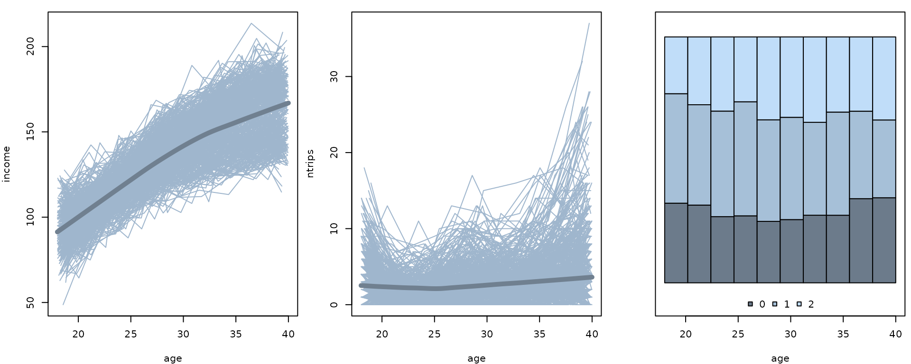
The evolution of income, number of trips and satisfaction level by age.
Figure @ref(fig:psurvey-outcomes-vs-age) shows that on aggregate
there is an increasing trend in the numerical outcome
income, that also the average number of trips changes over
time, and that the satisfaction distribution is rather stable over time.
However, the true data generating mechanism consists of three different
groups with different evolution profiles by age. This heterogeneity is
not easily discernible from these plots. We will demonstrate that the
proposed model is able to infer the group structure and the different
evolution profiles of these underlying groups.
Preparing inputs
We start by preparing all necessary input to call the main function
clustGLMM(). In particular, we create a named vector
family of length equal to the number of outcomes which
specifies the asumed family type of each outcome. The family type names
are not unique and one can for example either use "num" or
"gaussian" to indicate that the outcome is numeric and a
normal distribution should be used, i.e., the following two
specifications of family are equivalent for our
example:
family <- c(income = "num", ntrips = "poi", satisfaction = "ord")
family <- c(income = "gaussian", ntrips = "poisson", satisfaction = "cumulative")Then, for each outcome a regression model is specified. In
particular, we assume no fixed effects and group-specific effects of
age. We assume that ntrips and satisfaction
depend linearly on age, while for income also
a squared effect of age is included. We also include random
intercepts using random = ~ 1.
formula <- list()
formula[["income"]] <- list(fixed = ~ 0, group = ~ age + I(age^2), random = ~ 1)
for (y in c("ntrips", "satisfaction")) {
formula[[y]] <- list(fixed = ~ 0, group = ~ age, random = ~ 1)
}Function default_varying() returns a named logical
vector indicting for other parameters which could potentially be
group-specified, whether they are to be fitted group-specific. The
default values are:
varying <- default_varying()
varying## prec_num c_ord InvSigma InvQ naY
## TRUE TRUE FALSE FALSE FALSEThe standard deviation of the error of a numeric outcome thus is by default estimated group-specific. In the following we change that and impose the restriction that the standard deviation is the same across groups.
varying["prec_num"] <- FALSEFunction default_save() returns a named logical vector
which can be used to indicate for different parameters if their
generated chains should be saved and returned. The default setting
implies that both the chains and the posterior estimates of the missing
values are not returned and this can be changed by setting the argument
naY to TRUE.
save <- default_save(naY = TRUE)The default setting of the priors on the model parameters are
obtained using default_param(). We change the rate of the
gamma prior on the precision of the normal prior on the numeric outcome
to 15 and increase the rate parameter for
to 200 to induce a sparse solution.
param <- default_param(prec_num_rte = 15, e0_rte = 200) In the following, we use the default options for the argument
tuning when calling clustGLMM() which are
obtained with default_tuning().
MCMC sampling
We sample just one randomly initialized chain of short length for
, i.e., specifying the number of
components considerably higher than the true number of clusters. We call
clustGLMM() and specify the regression model using
formula. Argument id specifies the grouping
variable for the random effects and family the distribution
of the outcome variables and the data frame to evaluate the formula is
in data.
set.seed(12345678)
mcmc_burnin <- clustGLMM(formula, id = "i", family, data = psurvey, G = 10,
varying = varying, save = save, param = param, nchains = 1,
iter = 1000, standardize = TRUE, howsave = "data.frame")The setting for the MCMC sampling is specified by the number of
components G, the number of parallel chains
nchains and the number of iterations iter. The
further specifications of the model include the restrictions on the
parameters given in varying and the prior settings in
param. The parameters to save and return are indicated in
save. The argument standardize defines if the
numeric outcomes and covariates are standardized before analysis.
Argument howsave specifies how the MCMC draws are returned.
We set howsave = "data.frame" to return them as a data
frame which allows to easily access the draws of the different
parameters.
If inits is not provided, function
clustGLMM() initializes the MCMC sampling by randomly
assigning observations to equally sized components and, based on the
obtained partition of the data, estimating the model parameters by
separate regression models (without random effects). The sampling is
then implemented in C to speed up computations. Finally, an object of
class "clustglmm" is returned which contains among others
information on the fitted model, the posterior draws, a list with the
last sampled values. The MCMC draws returned consist of all draws
without omitting any iterations as burn-in.
Trace plots of the MCMC draws of the parameters or inferred
quantities allow to assess convergence. In particular, inspecting the
evolution of the component occupancy numbers ng is of
interest in this context. We can use the plot method for
this. We can easily assess how ng changes separately for
each component by setting ng_trace_chain_split = FALSE.
plot(mcmc_burnin, ng_trace_chain_split = FALSE)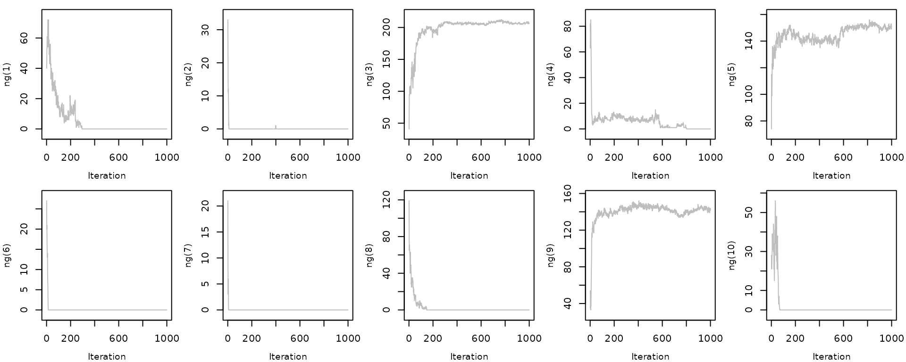
Traceplots - component occupancy numbers during MCMC sampling for the 10 components.
Figure @ref(fig:psurvey-mcmc-burnin-plot-ng) clearly shows that some of the 10 components are immediately emptied and that 3 non-empty components remain in the end. Next, we inspect the acceptance rates using:
## -----------------------------------------------------------------------
## Chain 1
## -----------------------------------------------------------------------
##
## Proposal acceptance rates grouped and summarized by parameters
## -----------------------------------------------------------------------
## Min % Mean % Max %
## e0 72.8 72.80 72.8
## beta_poi_ntrips 53.7 55.71 58.2
## beta_ord_satisfaction 68.0 70.25 71.7
## a_ord_satisfaction 54.4 58.00 61.1
## b 40.2 45.17 50.1These rates exceed the usual recommendation, which would suggest to
target a value between 25–35%. Hence, before continuing the sampling, we
adapt the tuning parameter and inflate the parameters
of the proposal distribution. Increasing the default value of 1 flattens
the proposal distribution, which induces lower acceptance rates:
tuning <- default_tuning(const_proposal_e0 = 4.5, const_proposal_beta_poi = 2,
const_proposal_beta_ord = 4, const_proposal_a_ord = 2.2, const_proposal_b = 1.5)We continue sampling from the last iteration using the new
tuning setting:
set.seed(12345)
mcmc <- clustGLMM(formula, id = "i", family, data = psurvey, G = 10, iter = 1000,
varying = varying, save = save, param = param, tuning = tuning,
inits = mcmc_burnin$last, nchains = 1, standardize = TRUE)Note that sampling MCMC chains can take several seconds or minutes,
depending on the size of the dataset, the complexity of the model, the
number of chains and the number of iterations. The print
method without specifying any arguments provides an overview on the
dataset, the defined regression models for the different outcomes and
the simulation specification used for MCMC sampling.
print(mcmc)## ###------------------------------------------------------------###
## ### Model Based Clustering for Generalized Linear Mixed Models ###
## ###------------------------------------------------------------###
## N = sample size: 4512
## n = number of units: 500
## observations per unit (min | median | max): 8 | 9 | 14
## G = maximal number of components: 10
##
## Overview of outcomes:
## num: income
## poi: ntrips
## ord: satisfaction
##
## Fixed effects invariant towards clustering (in order of appearance):
## income ~ 0
## ntrips ~ 0
## satisfaction ~ 0
##
## Random effects invariant towards clustering:
## income ~ 1
## ntrips ~ 1
## satisfaction ~ 1
##
## The structure of covariance matrix Sigma for random effects:
## income_(Intercept)
## ntrips_(Intercept)
## satisfaction_(Intercept)
##
## Group-specific effects for outcomes (in order of appearance):
## income ~ age + I(age^2)
## ntrips ~ age
## satisfaction ~ age
##
## Other group-specific parameters: c_ord, a_ord, pi_ord
##
## MCMC sampling:
## nchains = number of sampled chains: 1
## iter = length of the chain: 1000
## Overall acceptance: 28.56%
## Initialized with given values.Visual diagnostics
The default plot for objects returned by clustGLMM()
combines the trace plots of component occupancy numbers ng
for each chain into one plot (with argument
ng_train_chain_split = TRUE by default). In addition
argument what can be used to specify another parameter to
be plotted, e.g., the precision of the numeric outcome, and
yspec to indicate the outcome variable. To combine the two
plots into one plot we specify par() accordingly and set
argument setparmfrow to FALSE.
par(mfrow = c(1, 2))
plot(mcmc, ng_trace_chain_split = TRUE, setparmfrow = FALSE)
plot(mcmc, what = "prec_num", yspec = "income", setparmfrow = FALSE)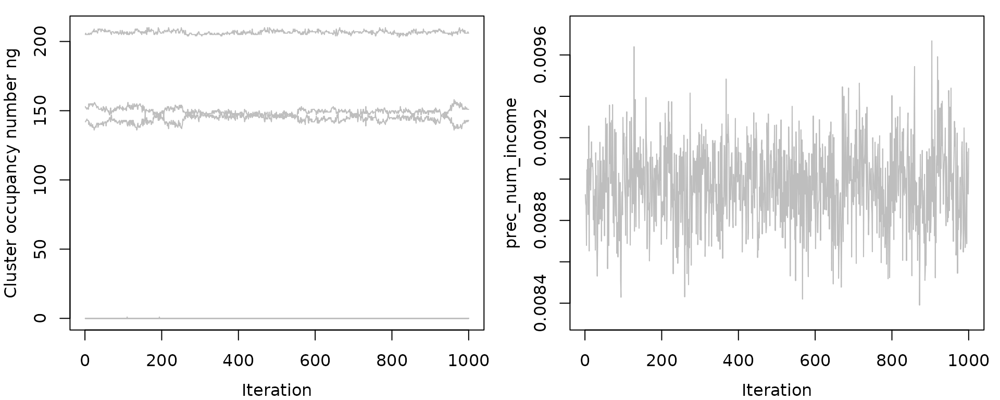
Trace plots - cluster occupancy numbers (left) and precision of the errors for income (right).
Figure @ref(fig:psurvey-mcmc-ng-prec-num) contains the default output
of the plot method on the left-hand side. The plot
indicates that the three filled components slightly change in size over
the iterations, but in general their size is rather stable. This
indicates that the sampler has already converged to a specific
clustering solution and this chain is suitable for cluster-specific
inference. If, by contrast, still strong changes in size were observable
or, in particular, if the emptying of some components was still
discernible, one should consider continuing sampling and dropping
iterations where superfluous components are not emptied yet.
Even if the trace plots of the component sizes indicate that the
stationary distribution is obtained, this might not be the case for
other model parameters. One can check the trace plot of each model
parameter by specifying the what argument in a suitable
way. Figure @ref(fig:psurvey-mcmc-ng-prec-num) on the right showcases
this output for the precision parameter of the error for the numeric
outcome income. The possible parameter names are explained
on the man page obtained using help("default_save"). See
also Table 2 in the supplementary material.
One might also be interested in focusing on a single specific scalar
model parameter and inspect all four implemented plot types: trace plot,
kernel density estimate, empirical cumulative distribution function
(ECDF) and auto-correlation function (ACF). These plots can be obtained
with function plot_diagnostics().
Note that we specify the outcome to which the parameter
belongs (yspec), but neither group (gspec
empty, precision is not considered group-specific) nor dimension
(dimspec empty, scalar parameter). When in doubt about the
specification, check mcmc$settings[[1]]. Moreover, every
plotting function is equipped with an option to trim iterations from a
burn-in phase and thin the remaining samples to reduce
auto-correlation.
plot_diagnostics(mcmc, what = "beta_num", yspec = "income", dimspec = 3, gspec = 3,
burnin = 0, thin = 2)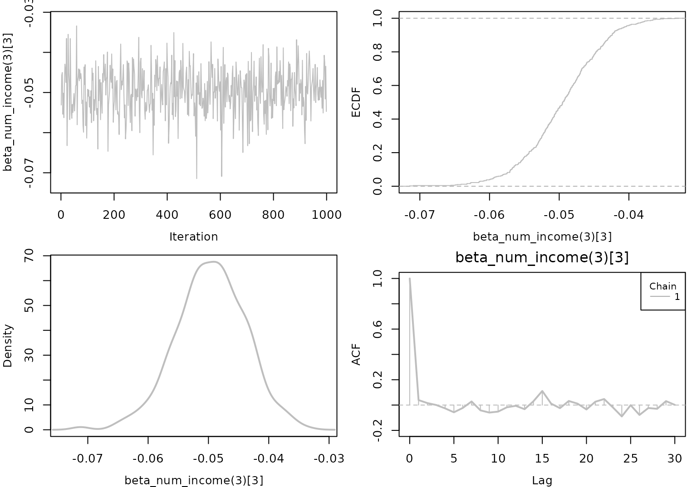
The four implemented plots - regression coefficient for squared age for income.
The plots in Figure @ref(fig:psurvey-mcmc-beta-3-num) show that the effect of the squared age on income in component 3 differs from zero, indicating that the effect of age on income is nonlinear in this component.
Within-chain post-processing
We take inspiration from the CliPS approach (Malsiner-Walli et al. {in press}) to obtain an
identified model and solve the label switching issue. In particular, we
cluster the MCMC draws of the parameters of the filled components based
on the label-invariant point process representation using
-means.
This post-processing step is implemented in the function
post_processing() which can be applied to objects returned
by clustGLMM(). This function focuses only on the draws
where the number of non-empty components Gplus is equal to
the most frequent number of non-empty components. In our example the
most frequent number of non-empty components is 3. Only draws of
iterations where the number of non-empty components corresponds exactly
to Gplus are kept for further analysis. Additionally, draws
of parameters sampled from empty components are dropped and the
remaining draws are relabeled to 1, 2, 3. In addition, the labels of
each draw are - if possible - permuted according to the
-means
clustering solution. Parameter draws where the
-means
clustering solution does not induce a permutation are replaced with
NA and the proportion of these draws is referred to as
non-permutation rate which is used to evaluate the quality of the
cluster solution.
set.seed(123456)
(mcmc_pp <- post_processing(mcmc))## ###------------------------------------------###
## ### Post-processed MCMC samples of clustGLMM ###
## ###------------------------------------------###
## -----------------------------------------------------------------------
## Chain 1
## -----------------------------------------------------------------------
## The new number of components for this chain: $G[1] = 3.
## We now have components: 1, 2, 3.
## Number of iterations with 3 components: 998 ( 99.80 %)
## Out of them, 0 (0.00 %) did not lead to a permutation when using k-means, these
## g-specific parameters are replaced with NA.
## Therefore, 998 (100.00 %) iterations have been permuted and aligned. These are now
## eligible for the analysis.The print method of the post-processed MCMC draws
summarizes how successful this procedure was. In this example, some
iterations were dropped because their draws did not contain exactly 3
filled components. However, for all remaining draws the label switching
issue could be resolved. The returned object thus only contains the
draws of these iterations for the non-empty components with suitable
labels from 1 to 3.
Note that the success of this post-processing step may vary depending
on the parameters used for clustering, the random initialization used
for kmeans() as well as its argument specification, which
can be changed by setting the arguments cols,
iter.max and nstart.
Overall, this post-processing step works well in case the data and the model specification result in a posterior reflecting a clear group structure. This is indicated by the posterior of the number of non-empty components having a clear mode and the non-permutation rate being low. Inspecting these quantities is recommended to assess the cluster solution. If they indicate that a poor cluster solution is extracted, modifying the model specification, i.e., the prior parameters or the data model, could be considered to guide the cluster extraction and improve the cluster solution obtained. Alternatively, one could decide to not extract clusters but use the mixture model to account for unobserved heterogeneity while focusing inference on cluster-invariant parameters using an unidentified model. For more details on the CliPS approach see Malsiner-Walli et al. ({in press}).
Inference
Describing the posteriors
After successfully obtaining an identified model, we inspect the
posterior distribution of the model parameters to perform inference for
cluster-invariant as well as group-specific parameters. In particular
the group-specific parameters are of interest to characterize the
clusters. An overview can be obtained via the summary()
method which applies the summary() method for
"mcmc" objects as defined by the coda
package for each chain separately and prints only posterior mean and
quantiles. In addition, there is also the option to convert the draws
into a "mcmc.list" object with function
as_coda() and utilize the framework for this kind of
objects.
Printing the posterior inference results for all model parameters
would produce a very long output. Hence, we decided to split the summary
into several parts. We start with the subset of cluster-invariant model
parameters where the name contains the pattern
"income":
sum_mcmc <- summary(mcmc_pp, burnin = 0, thin = 1)
print(sum_mcmc, which = "inv_param", pattern = "income")## -----------------------------------------------------------------------
## Chain 1
## -----------------------------------------------------------------------
##
## Summary of the parameter estimates
## -----------------------------------------------------------------------
## Cluster-invariant parameters:
## 2.5% 25% 50% Mean 75% 97.5%
## prec_num_income 8.6e-03 8.8e-03 0.009 0.009 9.1e-03 9.3e-03
## sd_num_income 1.0e+01 1.0e+01 10.555 10.560 1.1e+01 1.1e+01
## var_num_income 1.1e+02 1.1e+02 111.414 111.533 1.1e+02 1.2e+02The only cluster-invariant parameter for the outcome
income is the precision of the error. We thus obtain the
summary of the posterior of the precision parameter of the error for
outcome income as well as the derived quantities, standard
deviation and variance.
The summary for group-specific parameters reports the statistics for
every group-specific parameter. In the following, we only summarize the
group-specific parameters for cluster 1 where the parameter names
contain the pattern "ntrips".
print(sum_mcmc, which = "group_param", clusters = 1, pattern = "ntrips")## -----------------------------------------------------------------------
## Chain 1
## -----------------------------------------------------------------------
##
## Summary of the parameter estimates
## -----------------------------------------------------------------------
## Parameters specific for cluster g=1:
## Effect 2.5% 25% 50% Mean 75% 97.5%
## beta_poi_ntrips(1)[1] (Intercept) 0.340 0.443 0.49 0.49 0.538 0.641
## beta_poi_ntrips(1)[2] age 0.016 0.018 0.02 0.02 0.021 0.023The differences between posterior distributions of parameters across
different clusters can also easily be visualized using the specification
"clusters_..." for which argument in the
plot method.
plot(mcmc_pp, what = "beta_num", yspec = "income", which = "clusters_kerneldensity")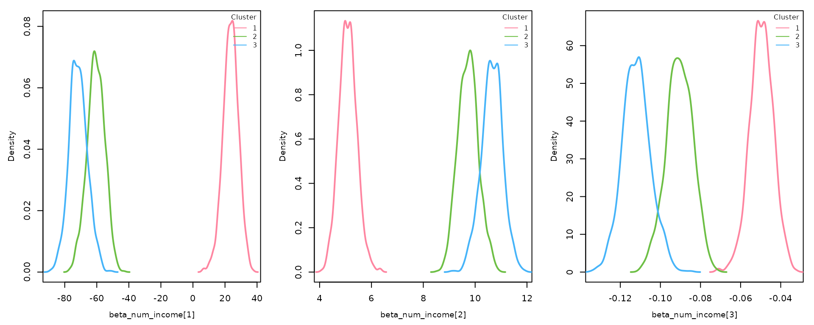
The regression coefficients of income - posterior kernel density estimates, clusters distinguished by color.
Figure @ref(fig:psurvey-mcmc-pp-beta-num-1) clearly demonstrates that
one cluster differs from the other two that seem to be rather similar,
in regard to income.
With which = "accept" we can inspect, how changing the
tuning parameters affected the acceptance rates for each
group of model parameters:
print(sum_mcmc, which = "accept")## -----------------------------------------------------------------------
## Chain 1
## -----------------------------------------------------------------------
##
## Proposal acceptance rates grouped and summarized by parameters
## -----------------------------------------------------------------------
## Min % Mean % Max %
## e0 24.85 24.85 24.85
## b 23.75 28.51 33.87
## beta_poi_ntrips 26.55 28.22 29.76
## beta_ord_satisfaction 27.35 29.83 32.97
## a_ord_satisfaction 23.65 25.68 29.26Moreover, with plot(, which = "accept") we could inspect
how the acceptance rates evolve over the whole sampling process.
Next we provide the summary of the model parameters related to the component weights:
print(sum_mcmc, which = "clust_param")## -----------------------------------------------------------------------
## Chain 1
## -----------------------------------------------------------------------
##
## Summary of the parameter estimates
## -----------------------------------------------------------------------
## Clustering-related parameters:
## 2.5% 25% 50% Mean 75% 97.5%
## Gplus 3.00000 3.0000 3.0000 3.0000 3.0000 3.0000
## e0 0.00237 0.0072 0.0116 0.0125 0.0164 0.0302
## w(1) 0.36979 0.3995 0.4147 0.4143 0.4290 0.4576
## w(2) 0.25866 0.2841 0.2972 0.2980 0.3116 0.3384
## w(3) 0.24980 0.2747 0.2869 0.2875 0.3003 0.3288Finally, we might be interested in inspecting the predictive
distributions for the 3 missing values for income:
print(sum_mcmc, which = "latent_param", pattern = "^naY_income")## -----------------------------------------------------------------------
## Chain 1
## -----------------------------------------------------------------------
##
## Summary of the parameter estimates
## -----------------------------------------------------------------------
## Latent variables:
## Observation 2.5% 25% 50% Mean 75% 97.5%
## naY_income[1] 529, i=59 130 149 160 160 171 186
## naY_income[2] 1644, i=181 152 165 173 173 180 194
## naY_income[3] 3982, i=441 120 136 143 143 150 164We also plot the kernel density estimates of the posterior distributions of the missing values. We add a dashed seegrean line indicating the true value to the plot as well as dotted black lines to indicate the 2.5% and the 97.5% quantiles of the posterior distributions. Figure @ref(fig:psurvey-mcmc-naY-income) shows that the true values are always covered by these 95% credible intervals.
par(mar = c(4, 4, 0.5, 0.5), mfrow = c(1, 3))
y <- "income"
for (j in seq_len(nmis)) {
plot_kerneldensity(mcmc_pp, what = "naY", yspec = "income", dimspec = j, labcex = 0.8)
abline(v = as.numeric(na_true_vals[["income"]][j]), col = "seagreen", lty = 2)
abline(v = sum_mcmc$coda_summary[[1]]$quantiles[paste0("naY_income[", j, "]"),
c("2.5%", "97.5%")], col = "black", lty = 3)
}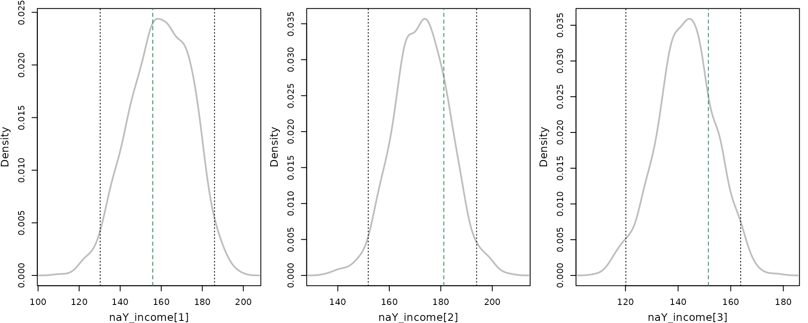
Predictive distribution for missing outcome values of
income.
Extracting specific MCMC draws
It is also possible to extract specific draws from the rich MCMC
output included in the object returned by clustGLMM(). To
understand how to select specific parameters, an overview over the
sampled parameters and how to address them is helpful. The names can be
inspected using str(mcmc$param_names):
str(mcmc$param_names, vec.len = 1)## List of 1
## $ :List of 19
## ..$ beta_num: chr [1:30] "beta_num_income(1)[1]" ...
## ..$ prec_num: chr "prec_num_income"
## ..$ sd_num : chr "sd_num_income"
## ..$ var_num : chr "var_num_income"
## ..$ beta_poi: chr [1:20] "beta_poi_ntrips(1)[1]" ...
## ..$ beta_ord: chr [1:10] "beta_ord_satisfaction(1)[1]" ...
## ..$ c_ord : chr [1:20] "c_ord_satisfaction(1)[1]" ...
## ..$ pi_ord : chr [1:30] "pi_ord_satisfaction(1)[1]" ...
## ..$ InvSigma: chr [1:6] "InvSigma[1,1]" ...
## ..$ Sigma : chr [1:6] "Sigma[1,1]" ...
## ..$ sdSigma : chr [1:3] "sdSigma[1]" ...
## ..$ corSigma: chr [1:3] "corSigma[1,2]" ...
## ..$ w : chr [1:10] "w(1)" ...
## ..$ ng : chr [1:10] "ng(1)" ...
## ..$ loglik : chr "loglik"
## ..$ U : chr [1:500] "U[1]" ...
## ..$ Gplus : chr "Gplus"
## ..$ e0 : chr "e0"
## ..$ naY : chr [1:9] "naY_income[1]" ...E.g., beta_num_income(4)[3] contains the draws of
coefficient three in the regression formula for income in
component 4, whereas prec_num_income contains the draws of
the precision for the numeric outcome income. The occupation numbers of
component 5 are stored in mcmc$draws[[1]][["ng(5)"]], while
the allocations of the third observation are stored in
mcmc$draws[[1]][["U[3]"]]. The names can be used to access
the draws directly and, e.g., plot a histogram.
Draws of specific parameters such as the latent cluster assignments
of each respondent or the components sizes
can easily be extracted from the draws object in the return
object by selecting the list element of the relevant chain, in this case
chain 1, and the columns which start with U or
w:
U <- mcmc$draws[[1]][, grep("^U", colnames(mcmc$draws[[1]]))]
w <- mcmc$draws[[1]][, grep("^w", colnames(mcmc$draws[[1]]))]
# or using dplyr
library("dplyr")
U <- mcmc$draws[[1]] |> select(starts_with("U"))
w <- mcmc$draws[[1]] |> select(starts_with("w"))Inspecting the posterior predictive distributions
Inspecting the summaries of the posterior distributions provides some
insights into how the clusters differ. However, the easiest way to
interpret the clusters is to inspect and compare cluster-specific
predictions. In our example, we are interested in how the predicted
cluster-specific outcomes vary by age. The predict function
is designed to follow the usual use of predict in R. The
functions expects as input newdata and a single outcome
variable name y. By default (type = "link")
the posterior distribution of the linear predictor consisting of both,
fixed and group-specific, parameters is returned.
newdata <- data.frame(age = seq(18, 40, by = 0.2))
pred1 <- predict(mcmc_pp, newdata, y = "ntrips", type = "link")The function returns a list of fit, lwr and
upr containing the posterior mean and equal-tailed credible
intervals of prescribed level for each cluster separately. In addition,
predictions of the mean on the response scale
(type = "response") as well as of the response
(type = "posterior_predictive_response") might also be
obtained.
pred2 <- predict(mcmc_pp, newdata, y = "ntrips", type = "response")
pred3 <- predict(mcmc_pp, newdata, y = "ntrips",
type = "posterior_predictive_response") In the following we plot the cluster-specific predicted values for
ntrips.
par(mar = c(4, 4, 2.5, 0.5), mfrow = c(1, 3))
COL <- colorspace::rainbow_hcl(mcmc_pp$modeGplus[1], c = 80, l = 50)
add_pred_lines <- function(pred) {
matplot(newdata$age, pred$fit, type = "l", col = COL, lwd = 2, lty = 1, add = TRUE)
matplot(newdata$age, pred$lwr, type = "l", col = COL, lwd = 1, lty = 2, add = TRUE)
matplot(newdata$age, pred$upr, type = "l", col = COL, lwd = 1, lty = 2, add = TRUE)
}
plot(c(18, 40), c(0, 3), type = "n", main = "Linear predictor",
xlab = "age", ylab = expression(x * beta))
add_pred_lines(pred1)
legend("topleft", legend = 1:mcmc_pp$modeGplus[1], title = "Cluster",
col = COL, lty = 1, lwd = 2, bty = "n")
plot(c(18, 40), c(0, 8), type = "n", main = "Mean of the response",
xlab = "age", ylab = expression(exp(x * beta)))
add_pred_lines(pred2)
plot(c(18, 40), c(0, 20), type = "n",
main = "Posterior predictive distribution of response",
xlab = "age", ylab = expression(Y ~ "~" ~ Pois(exp(x * beta))))
add_pred_lines(pred3)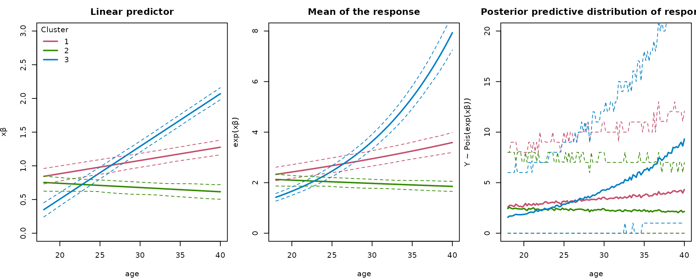
Cluster-specific predictions of ntrips. Linear predictor
(left), predicted mean response with 95% credible intervals (middle) and
samples from the predictive distribution (right).
Obtaining clustering probabilities and deviance
The clustering of the observations is based on the sampled allocation
indicators. A quick summary of the clustering can be displayed by
adjusting the print statement:
print(mcmc_pp, which = "clustering")## ## Clustering based on sampled indicators:
## -----------------------------------------------------------------------
## Chain 1
## -----------------------------------------------------------------------
## The most-frequent number of non-empty components: 3
## Empty components:
## Non-empty components: 1, 2, 3
## 1 2 3
## 206 150 144
## Average certainty of assignment to a component:
## 1 2 3
## 0.997 0.978 0.975The most commonly sampled label for each respondent can be obtained
using mcmc_pp$clustering while the relative frequency of
this cluster assignment is in mcmc_pp$certainty (with both
returning a matrix with dimension equal to the number of respondents
times number of chains).
This clustering can be compared to the true cluster labels which are
available in the data object psurvey_latent using:
data("psurvey_latent", package = "clustGLMM")
psurvey1 <- merge(psurvey, psurvey_latent, by = c("i", "j"))
psurvey1 <- psurvey1[psurvey1$j == 1, ]
psurvey1[, "Uclustering"] <- mcmc_pp$clustering[psurvey1$i, 1]
with(psurvey1, table(g, Uclustering))## Uclustering
## g 1 2 3
## 1 204 0 0
## 2 2 7 142
## 3 0 143 2
with(psurvey1, mclust::classError(g, Uclustering)$errorRate)## [1] 0.022After suitable relabeling, the misclassification error is indeed very
low (0.022). To permute the labels and align them with the true labels
function permute_cluster_labels() can be used. This
function can also be used to align the cluster labels across multiple
chains. Using perm, we specify how to permute the
labels.
perm <- list(c(3, 1, 2))
mcmc_perm <- permute_cluster_labels(mcmc_pp, perm = perm)However, for consistency in the analysis and interpretation of the
clusters we continue working with the original post-processed MCMC
sample mcmc_pp where the labels remain unpermuted.
Finally, we plot the observed data again, but also include the
information to which cluster each respondent is assigned using argument
group.
psurvey$Uclustering <- mcmc_pp$clustering[psurvey$i, 1]
par(mar = c(4, 4, 1, 0.5), mfrow = c(1, 3))
plot_num_vs_x_grouped(psurvey, "income", x = "age", id = "i", group = "Uclustering",
add_lowess = TRUE, legend_placement = "topleft")
plot_num_vs_x_grouped(psurvey, "ntrips", x = "age", id = "i", group = "Uclustering",
add_lowess = TRUE, legend_placement = "topleft")
plot_cat_vs_x_grouped(psurvey, "satisfaction", x = "age", group = "Uclustering")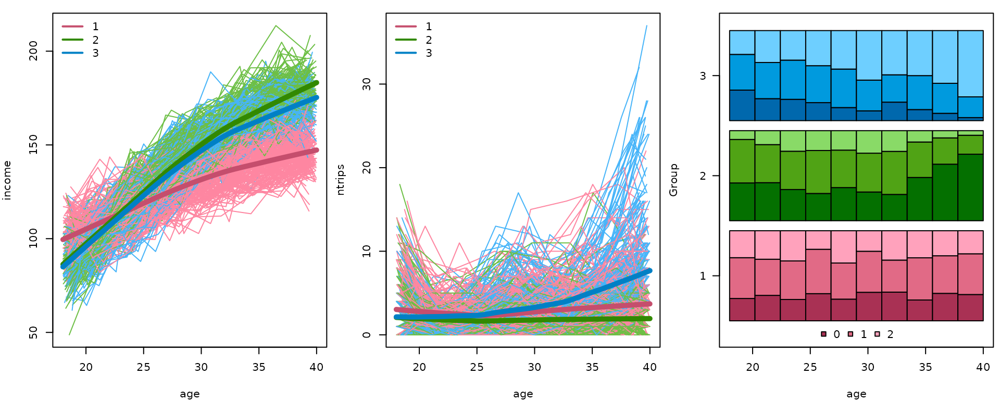
Estimated clustering of the data. Colors refer to clusters, smoothed mean function is added.
Figure @ref(fig:psurvey-final-clustering) clearly shows the
differences between the clusters which were not visible in Figure
@ref(fig:psurvey-outcomes-vs-age). Note that using the true cluster
labels available in
data("psurvey_latent", package = "clustGLMM"), we would
essentially obtain the same differences up to label permutation.
So far we considered the classification of respondents based on the
sampled indicators. Alternatively, the posterior distribution of the
clustering probabilities
could be determined and used to obtain clustering probabilities for
already observed or new respondents. These clustering probabilities are
obtained with clustering_probabilities_and_deviance().
pmcmc <- clustering_probabilities_and_deviance(mcmc_pp, data = psurvey, id = "i",
start = 1, end = mcmc_pp$iter, thin = 10, chains = 1, NGQ = 1)Using data = psurvey, these clustering probabilities are
determined for all respondents. To ensure that this example runs in a
couple of seconds, we consider only every 10-th iteration (using
thinning with thin = 10) and the rather crude Laplace
approximation (NGQ = 1). In a real application, we suggest
to use parallelization to reduce the computational burden and pursue a
stepwise procedure to determine a suitable order comparing the
approximations obtained.
We compare the resulting clustering based on the clustering probabilities to the clustering obtained based on the sampled indicators to see that they align rather well:
psurvey1[, "clustering"] <- pmcmc$clustering[psurvey1$i, 1]
with(psurvey1, table(Uclustering, clustering))## clustering
## Uclustering 1 2 3
## 1 206 0 0
## 2 0 149 1
## 3 0 0 144In the following, we visualize the posterior distributions of the clustering probabilities. We focus on subjects where the uncertainty is high. We plot the probabilities for respondents with the four lowest certainties to be able to inspect the competing clusters for these observations. We use the ECDF rather than the kernel density estimate here, since the density reaches extremely high values for one cluster, which makes the other two clusters almost flat despite being the two competing ones.
par(mar = c(4, 4, 2.5, 0.5), mfrow = c(1, 4))
for (i in order(pmcmc$certainty[, 1])[1:4]) {
plot_clusters(pmcmc, what = "pUig_int", dimspec = i,
chains = 1, setparmfrow = FALSE, doKern = FALSE, thin = 10)
mtext(paste0("true g=", perm[[1]][psurvey1$g[psurvey1$i == i]]),
side = 3, line = 0.5, font = 2, cex = 0.8)
legend("bottomright", legend = 1:mcmc_pp$modeGplus[1], title = "Cluster",
col = COL, lty = 1, bty = "n")
}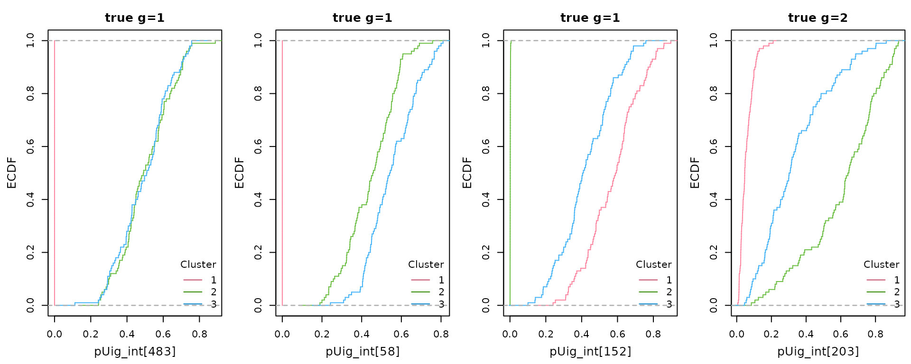
Posterior distribution of clustering probabilities for subjects with the lowest certainty level.
The clustering_probabilities_and_deviance() function may
also be used for out-of-sample predictions. It does not use any samples
of the latent data specific for each respondent. Hence, it can be used
to evaluate the clustering probabilities
for a newly observed respondent with outcomes
and covariates
.
Moreover, the probabilities could be estimated sequentially as the
number of observations per respondent increases using
dynamic_prob = TRUE. In this case we use all samples and a
better approximation with NGQ = 3:
newdata <- data.frame(i = 501, age = seq(19, 39, length.out = 10),
income = seq(110, 200, length.out = 10), ntrips = rep(1:5, each = 2),
satisfaction = c(0, 0, 0, 1, 1, 1, 1, 2, 2, 2))
mcmc_new <- clustering_probabilities_and_deviance(mcmc_pp, data = newdata, id = "i",
dynamic_prob = TRUE, start = 1, end = mcmc_pp$iter, thin = 10, NGQ = 3) We visualize the sequentially estimated clustering probabilities for this respondent to indicate how cluster assignment varies when more information is available for this respondent.
sum_new <- summary(as_coda(mcmc_new))$quantiles
fit <- matrix(sum_new[-c(1:2), "50%"], ncol = 3, byrow = FALSE)
lwr <- matrix(sum_new[-c(1:2), "2.5%"], ncol = 3, byrow = FALSE)
upr <- matrix(sum_new[-c(1:2), "97.5%"], ncol = 3, byrow = FALSE)
par(mfrow = c(1, 1), mar = c(4, 4, 0.5, 0.5))
matplot(x = newdata$age, y = fit, type = "l", col = COL, lwd = 3, lty = 1,
xlab = "Age", ylab = "Clustering probability", las = 1)
matplot(x = newdata$age, y = lwr, type = "l", col = COL, lwd = 2, lty = 2, add = TRUE)
matplot(x = newdata$age, y = upr, type = "l", col = COL, lwd = 2, lty = 2, add = TRUE)
legend("topleft", legend = 1:3, title = "Cluster", col = COL, lwd = 3, lty = 1, bty = "n")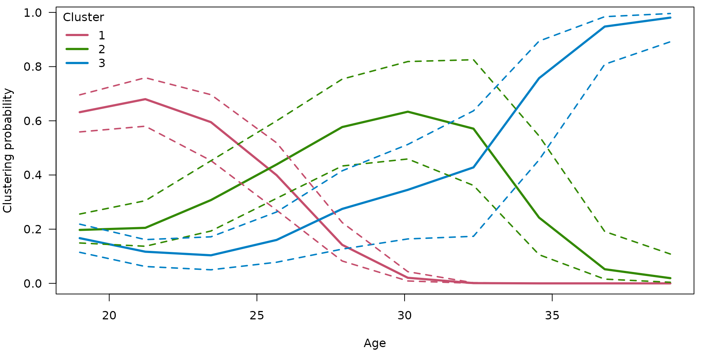
Posterior quantiles (2.5%, 50%, 97.5%) of clustering probabilities (dynamically in time) for newly observed respondent.
As more and more observations for this new respondent are available the clustering probabilities evolve in time as depicted in Figure @ref(fig:psurvey-probability-new-data-plot). The high income at young age lead to rather high clustering probabilities for one cluster, which shifts to another cluster due to the steady income growth and the high number of trips and level of satisfaction. These results also indicate how the clustering uncertainty decreases with more information being available for the individual.
Summary
We introduced the package clustGLMM, which provides an MCMC implementation for clustering longitudinal data of mixed type. The package combines the framework of GLMMs with finite mixtures to allow for flexible regression modeling of different outcome types and link observations from the same individual through correlated random effects as well as cluster memberships.
In particular, the package allows to include five different types of outcomes in the regression models. Each outcome type may possibly be modeled with a different formula, and the user can specify which effects should differentiate the clusters. The functions provided do not only enable efficient MCMC sampling based on data augmentation, but also suitable post-processing and inspection of the fitted model to ease the use of this model class in data analysis. Specific features covered by the package are that it allows to deal with missing observations, label switching, an unknown number of clusters, insufficient burn-in iterations, prediction and the clustering of new observations. We demonstrated the ease of usage as well as the broad range of functionality covered on an artificial dataset.
The package was developed with a model-based clustering application in mind, assuming that distinctively different groups can be extracted from the data. We demonstrated the use of the package in such a situation. An alternative use case would be to fit mixtures of GLMMs to account for unobserved heterogeneity, while focusing inference on parameters which are constant across groups. In this case, no identification is required, but package clustGLMM is still useful to fit the model and perform posterior inference for parameters constant across groups.